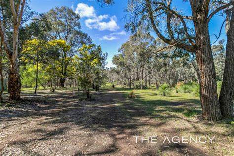
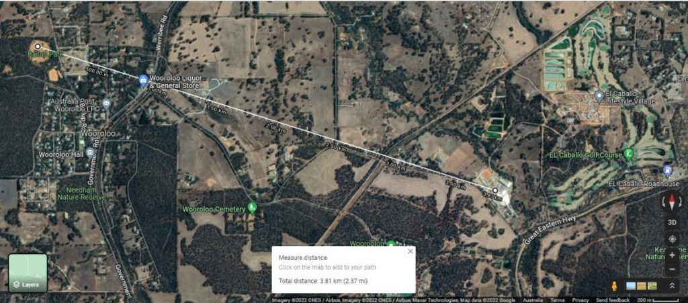
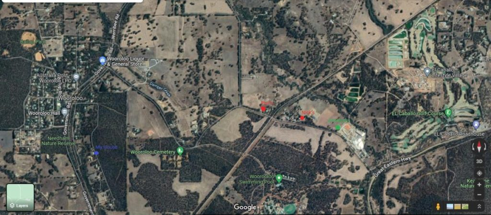
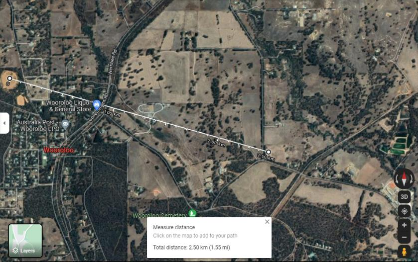

The following is the 24th part from a series of articles describing the adventure that a follower who goes by the handle "daegonmagus" has experienced since reading MM. They are very interesting and fascinating. I hope that you all learn from his journey and maybe learn a thing or two as he relates his unique experiences to the readership here. Lately he has been conducting lucid dreaming (LD) to map out the subconscious / non-physical realms that surround us. His writings are very interesting, but describe things way beyond my understanding. Never the less, many MM readers find great value in his experiences, and writings, and one can easily see benifit in reading his writings. I hope that you injoy this article. -MM
Part 24 – Cattle Mutilations, Missing Time, Broken and Misplaced Memories, Ghost and UFO sightings; Wooroloo is the Place to be For Paranormal Activity. 5 star Recommend
I’ve been meaning to do an article on this for while. It entails a bizarre event I unwittingly found myself caught up in when I was about 16 years old, that my friend was {apparently} also involved in. Since it happened, this event has left me with some puzzling question. And guess what, SD was also involved with it. This was a good year or so before I had even met her. In fact, this event has had such an effect on me that I wrote a short story about it a few years ago, trying to make light of the weirdness of the situation through the use of dark humour, which can be found on my website at Daegon Magus | Author for anyone who is interested. In all seriousness though, there isn’t really anything humorous about it. Considering the circumstances surrounding the event from both our vantage points, SD and I believe there is a very real possibility this was an alien abduction scene with a level of memory suppression of what actually took place being employed on both of us. Thinking about that and what “may” have happened to me really gives me the heeby jeebies.
To start this story off, I need to explain the town I lived in as a kid. Wooroloo is a semi rural town situated about 55km East of the Perth CBD.
It houses an abbatoirs, a cemetery and both a minimum and maximum security prison, and an old tuberculosis clinic-come-hospital all within a few short kilometers of each other. My house was situated on the edge of the thin strip of bushland that insulated these facilities from the town centre. I could quite literally grab my pushbike and tour close to these facilities (with the exception of the maximum security prison) within an hour. I’d heard rumours as a kid that this strip of bushland was haunted; that some guy from one of the prisons hung himself here and would sometimes appear as a ghost to those wandering about.
Speaking of ghosts, my grandmother, who lived on the same block of land as my father (she gifted him the top half for his 21st birthday, while her house was situated on the bottom half on the otherside of a creek a few hundred metres away) saw the ghost of her late husband, Gordon, my father’s step father, one night; the ghost of Gordon appeared at the foot of her bed and sort of just sat there smiling at her for a little while. She described it as a somewhat pleasant experience.
School was about 3 quarters of kilometre away at the end of our road in the centre of town. It was a pretty small primary school with just over a hundred kids in total in the whole school. Note that I have written previously of having broken memories involving “something” happening with peers from my class that is directly related to my first contact experience with the Elder Guardians, and a recent dream that I suggested was a memory of an abduction involving a squid like looking race of beings with this same class.
The first thing I remembered upon coming into the presence of the Elder Guardians (as my memory was unlocking, but was yet to be fully unlocked) was that what I was experiencing was related to that something happening to myself and about 5 or 6 others that had been mind wiped from us. Although I couldn’t pin point it to more than some strange abduction event, I knew it was very very relevant. These peers of mine, who I no longer talk to have something to do with it, I am sure of it, even if they do not realise any of it.
Getting back to the event in question, unbeknownst to me at the time of this particular experience, SD was living with her boyfriend just down the road from this school, in what she described as being a very haunted house.
In this house, SD told me very weird things used to happen; loud music would randomly start playing from a room they could never quite find or put their finger on as to the tune even though it sounded very familiar. They’d think they found the room it was coming from, only for them to open the door and it would randomly change to coming from another room. Sometimes the rooms would suddenly drop several degrees in temperature for no apparent reason. There was an instance where her boyfriend, Roger, scared the shit out of his little brother because he came out of his room with red eyes after being asleep in there for three days straight (though he thought it was only a night’s worth).
Roger told her that he used to have strange {lucid} “dreams” where weird beings would take him away to scary dream places whenever he fell asleep with his head against a certain wall, though being religious, he never thought to dig deeper into them and experiment with them like I had been doing a lot of up until that point. Later they found out a teenager had hung himself in the back yard, which they figured accounted for all the spooky action at not very far distance.
A little further along down the road from Roger’s place is what is known colloquially by townsfolk as the gravel oval; a big patch of dirt that motor bike riders like my friend Zak like to take their bikes and bush banger cars out to thrash them into oblivion.

One night Roger’s dad was outside having a smoke looking toward this gravel oval (Bailup Park, as it called on google maps) when he noticed about 13 little lights come out of the ground, ascend to a low point in the sky and just start dancing in front of him before all shooting off in different directions. As someone who was apparently fairly sceptical of UFOs and aliens, this was apparently a big game changer for him.
It is important to note here that the gravel oval is not really situated near any cattle grazing property. There is a horse stud up the road, and that is about it. Nothing that would involve any cows though, as most of the larger paddocks are situated on the outskirts of town. There is a small paddock next the gravel oval, but I don’t think the owners ever had cows in it. I could of course be be wrong. Regardless, the most likely place you’d find cattle would be outside of the town centre, like in the paddocks surrounding the abbatoirs, which is 3.8km south east, as the crow flies.

The Event:
This particular night, my friend Nick was having a party. Nick lived quite close to the abbatoirs, only a few hundred metres away on the same road. My other good friend, Matt, had caught the bus home with me, and after spending half an hour so at my house having some food and getting ready, we headed out on foot to Nick’s sometime in the afternoon, probably around 5pm, considering my school bus got back into town from high school at about 4:30. So it was still definitely day time.
Given the road to Nick’s headed back into town, and wrapped around it before heading back towards his house, it was quicker for us to cut through the {haunted} bush as it shaved off a couple of kilometers of walking. After the bush, you’d pop out at the fenceline of a farm owned by the minimum security prison – not exactly something they really approved of if they caught people wandering around it, but I knew a spot where the fence was broken enough to make easy access.
After 100m or so you come to another boundary fence line of the cemetery where my brother was buried. I had this ritual where I’d sit and talk to him for a little while, then kiss my two fingers and rub them on his cross, as a way to say “see you”. We then walked down the road, past his friend Phil’s house, to Nicks which was only a few house past Phil’s.

So anyways, the party kicked off and it got dark.
I had some alcohol that night but not enough to get anything beyond super talkative. It was during the period where I was starting to not find enjoyment in drinking too heavily, and had found what it meant to drink conservatively.
My memories of conversations with people at the party and other very specific details, even to this day, suggest that this was definitely the case. If not, I wouldn’t remember these details. Just trust me on that. I remember it was getting late and I decided to head home as I couldn’t be bothered staying at Nick’s with the inevitable lack of sleeping equipment.
It was a cold night, and I’d done my fair share of using piles of shoes and dog’s beds as matresses. Another testament to my sobriety – when you are drunk these things are not too much of a problem, but when sober they seem quite unappealing for bedding material for some strange reason. Actually, I was quite sober when I slept on a pile of shoes, but that is a story for another time.
So I was looking for Matt to tell him I was planning on heading home. It was somewhere on the other side of midnight, maybe even heading into the early hours of the morning – 1 or 2 am. Something like that. I wanted to try and get home and into bed before the 3am dip in temperature came about, because I wasn’t one for bringing jackets or long pants to these kinds of shindigs. I was kitted out in a standard T shirt and some shorts and my sensitive bits were in danger of inverting due to the cold. Eventually I found Matt and he told me to head off without him as he was having a good conversation with a girl he fancied. He planned on staying at Nicks. Cue MWI slide here.
This is where the memory distortion comes into play, that I don’t think can be completely contributed to my alcohol consumption (as my brother in law tried to suggest) given that I was very definitely sober when I left. I will tell you I was completely alone, on account of Matt wanting to chat up the girl he was talking to. In fact, I remember very specifically I was alone as I headed down the road and back toward the abbatoirs. It was pitch black and I couldn’t see five feet in front of me, which eventuated in me walking into one of the shoulders, slipping on the gravel and scraping my knee on the road.
So I was about half way along the paddock next to Phil’s house (still on the road). We don’t get snow here, so it probably wasn’t exactly life threatening, but being nothing but shorts and T shirt, the cold was really biting at me. It was dead silent too; that really eerily unnerving kind of silence. All of a sudden I heard this sound I figure was about 25 to 50m into that paddock that was RIGHT FUCKING NEXT TO ME.
It was so odd, in that it sounded like a bunch of dangling chains hanging from a fair height, followed by a very mechanical conveyor belt starting up, followed by a cow mooing which melded into a horrible shriek as something cut its head off, followed what sounded like a gushing of A LOT OF FUCKING WATER. Like, more water (or blood) than a cow’s body could hold.
And then, just like that, it all stopped.
Back to nothing but total silence. Neither even the flicker of flame from a candle light to illuminate the area. It all happened in the middle of a field in total darkness. And make no mistake about it, this was quite definitely a cow being brutally murdered by a mechanical machine of some sort.
I am going to be honest, whatever it was, it scared the absolute fucking shit out of me.
I was a stone’s throw away from something out of a Stephen King novel.
After my trip in the ditch I had been walking quite carefully and slowly making sure I had a firm footing so I didn’t trip up again, but upon hearing this, I just fucking bolted into darkness without even thinking about it. There could have been a tree in front of me for all I knew and I would have hit it at full sprint it was that dark.
Holding my arm out, I couldn’t even see it.
There was no moon either, which made it even worse. The question of doubling back to Nick’s or even Phil’s didn’t was a no go, because it meant crossing back past the noise, something I was very definitely not going to do. The only other option was to head towards the cemetery and try and get home. Yeah I know, real horror story kind of shit.
So off I went, back through the cemetery and the prison farm until I eventually made it home unscathed (I think).
The whole way home I tried rationalising what the fuck it was I had just heard, telling myself it was just a late night butchering at the abbatoirs. Only problem with that though was that the abbatoirs had stopped butchering cows several years prior to focus on pigs; they were now called Linley Valley Pork to allude to this fact.
And 1 – 2 in the morning seemed a bit off their usual 9 – 5pm schedule. Not to mention it being an occupational health and safety violation doing it in total darkness. What got me was those damned chains. These sounded like they were hanging from a good height and were a good length. And the conveyor belt….this would have had to have been some big machinery to cart out into the middle of a field, then there is the question of the instant start up; there simply was no hint at a generator or diesel engine you’d expect would be needed for such a piece of machinery.
The whole thing took maybe 5 seconds, which obviously is a lot less than you’d need to start up and shut something with one of these engines down.
If this was some kind of late night cow heist, as my mother in law suggested, it was incredibly daring, dangerous and using some advanced equipment. It’s not like a cow is easy killing even in full day light with a taser to knock it out, let alone in the middle of a field in total darkness. And yeah my brother in law (not SD’s brother, my sister’s boyfriend) worked at this abbatoirs so I have a good idea of what killing a cow to slaughterhouse protocol involves; he went through the whole process with me a number of times.
So I had this strange thing happen, and, figuring I was alone, I didn’t mention it to anybody. Being so close to the abbatoirs (if you call over 600m away close), I just knew people would misconstrue it, say I was drunk (like my brother in law did) and that it was probably just them doing a late night kill. Plus I had no proof of my claims.
Added to that, I genuinely didn’t like talking about it. It was the creepiest shit that had ever happened to me. I kind of put it out of my mind for a few years, until Matt came over one day to catch up. This was long after I had met and married SD and we were living together in the house where I had my first Elder Guardians contact experience. I think this was a few months before that.
Matt was sitting on the couch and out of nowhere says “hey remember that fucked up noise that sounded like a cow getting slaughtered we heard that night coming home from Nick’s?”
It turns out Matt was very definitely with me when it happened, even though I have a very specific memory of him staying at Nick’s and me leaving without him. Apparently he changed his mind soon after and caught me just as I was leaving. Interesting considering I didn’t tell anyone because I knew I had no proof.
And just when you thought this story couldn’t get any more weird and creepy, SD, told us she had heard the exact same thing one night at the gravel oval where Roger’s dad had seen the UFO cluster. We had obviously talked about it a little bit between us, but to Matt this was new news.
SD’s story:
It was a full moon(suggesting it was a completely different night) and was late evening, on the cusp of getting dark, probably around 7pm. Her and Roger decided to go for a walk around town to have a look at the moon.
They thought they were gone for about half an hour, an hour at most, but when they got back, Roger’s dad, sitting out on his porch having his nightly puff, remarked that they had been gone a long time.
Confused, SD said “no, we have only been gone an hour”. Roger’s dad said, “nope, you’ve been gone hours. It’s almost midnight.”
Confused, SD stood there trying to figure out the where the missing time had gone while Roger talked to his dad. They were out there about 15 minutes, when they heard the same noise – according to SD it was the exact same dangling of chains, followed by a conveyor belt starting up, followed by a cow getting slaughtered and a rushing of a large body of water or liquid – coming from where she guessed was the gravel oval (less than 100m away from Roger’s house where his dad had seen those dancing lights).
Errgh this is getting messy, when you consider the obvious dream bond we have together.
What the fuck did we witness?
This is curious because not only is it over 2.5km, as the crow flies, from the gravel oval to where I was when I heard it, but, like I said, there are not many cows around this part of town.
Surely if something was poaching people’s stock, you would have heard about it in such a small town. This was the type of town where one’s dirty laundry was everyone else’s. But, I guess if it was a weird enough situation, it could have intentionally slipped mind when hitting up the local gossip network. I am curious though, if anyone in these areas did have any missing or butchered cattle to report, I’d definitely like to know about it.

Some notes:
The abbatoirs stopped killing cows for quite a number of years before this event even happened. I remember there was a big front page article about it all over the local newspaper.
Given rumours that the abbatoirs was trying to buy out people in the area, one could argue it was a ploy by them to freak the house owners into selling, but then, this doesn’t explain why SD heard it on the other side of town where the abbatoirs would have no claim.
My experience would have taken place somewhere between 400 to 500m away from the main butchering facility of said abbatoirs, in vacant land that was insulated from abbatoirs owned land by several houses. There is no reason for an abbatoirs to be carrying out killings this far away from its building where all the equipment to do a proper job is all set up, or 3km away if you go by SD’s account, or even at this time of night. If it was a cow heist, this was an incredibly stupid part of town to do it from, when you could go further out and nab one from a much larger field further away from houses.
My auntie (who lived in a granny flat next to my grandmother on the same block as my dad’s house) also held a supervisor position at these abbatoirs for a number of years including when I had this experience and sometime afterwards. Both her and my brother in law agree the time of night and way the killing I heard was carried out without light was very far out of the safety protocols of abbatoirs.
From what I know about killing an animal that size, doing it in total darkness through cutting it’s throat is practically suicide. You’d have to be pretty desperate, or on some serious drugs, to even try it. None of it makes any sense, and honestly I think the suggestion it was a heist is quite a lame one, for reasons mentioned above.
Either way you look at it, there is something very strange going on, in a town that seems to have a knack for paranormal shit happening in it. Admittedly I didn’t really come past all that much after Nick’s party. I ended up moving town a year or so later, and didn’t come back for a number of years. All I know is that I have memories of this event that deviate from those of Matt, and both SD and Roger had missing time when they heard their version of it
SD suggested that maybe what we heard was really a carry over hearing event from an abduction; that maybe we all got abducted, something happened on the ship, then we were mind wiped and what we heard was like an echo of when they swapped us into this timeline. I don’t know, but given I have broken memories of other abductions with my class mates, I can’t rule this out altogether. It certainly explains SD’s and Roger’s missing time. As for me, I don’t recall having any missing time, but considering the fact that I was out in the middle of nowhere in total darkness – which was somewhat disorientating as it was – and that when I finally got home, the last thing on my mind was to check the time, it is a possibility I can’t ignore.
There is also the fact I have no memory of Matt being with me, even though he proved he was (he mentioned it before I had brought it up, which is what surprised the shit out of me). I do have this memory of being sort of frozen in place for a few seconds after it happened, but I figured this was just out of the sudden startling nature of the whole thing. Maybe that was when “they” put me back? Who knows?
This town also has a knack for serial arsonists to light he bush surrounding it on fire. When I was 7 I had to evacuate to my other grandma’s place because a fire was raging through town.
During that fire, a firefighter went out and lit another fire down the road. Our neighbours house ended up burning down; I went over there the next day with my dad and my brother (my dad was in the fire brigade) and all that was left was a fridge in the middle of burnt out rubble.
Only this year another arsonist who was part of the same bush fire brigade went around lighting fires IN THE EXACT SAME AREA as the first guy.
And if that isn’t enough coincidence for you, yet another big fire happened last year in the same area I heard the cattle mutilation which burnt down something like 50 houses. This was caused by a guy using an angle grinder in in the middle of 40 degree C summer on dry, dead grass.
I always joke that the aliens must have a stupidity amplifier in operation in town, though SD has had lucid dreams which suggest there is in fact some kind of shrouding equipment connected to the amnesia devices that is located here.
Any information the Domain can provide on this town and what is going on there would be appreciated.
You can visit the daegonmagus Index here…
MM Articles & Links
You’ll not find any big banners or popups here talking about cookies and privacy notices. There are no ads on this site (aside from the hosting ads – a necessary evil). Functionally and fundamentally, I just don’t make money off of this blog. It is NOT monetized. Finally, I don’t track you because I just don’t care to.
- You can start reading the articles by going HERE.
- You can visit the Index Page HERE to explore by article subject.
- You can also ask the author some questions. You can go HERE to find out how to go about this.
- You can find out more about the author HERE.
- If you have concerns or complaints, you can go HERE.
- If you want to make a donation, you can go HERE.